Work in progress
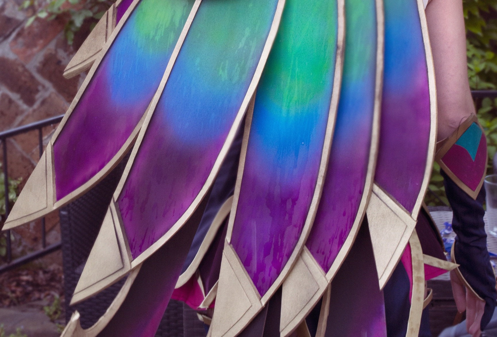
Welcome to Kindziapl Workshop
Here you can see all my work
IT professional by day cosplayer by night
She has always wanted to combine her passion for crafting and the arts with her determination to learn about computers and technology.
She learned the basics of sewing from her grandmother and the basics of pattern making and XPS foam from the internet. Her first costume, made in 4th grade of primary school, was of Morgana from League of Legends, created from old clothes and crepe paper.
However, her cosplay journey truly began when she discovered Kamui Cosplay's tutorials. These opened her eyes to new materials and easy techniques, and her first cosplay worth sharing was Blood Moon Elise from League of Legends. This was the first cosplay she took to the local competition during LAN Party, where it won first place.
This event finally made her realise that cosplay is not weird and that people enjoy seeing their favourite characters brought to life. This gave her even more motivation to create even better cosplays, and she dreams of becoming one of the best-known cosplayers.
My projects
CosplayStar Guardian Xayah
(League of Legends) Date: 2020 Materials used: Eva foam, textyles, faux-fur Techniques used: Sewing, foam carving, airbrush paintingClick for the progress:
(League of Legends) Date: 2020 Materials used: Eva foam, textyles, faux-fur Techniques used: Sewing, foam carving, airbrush paintingClick for the progress:
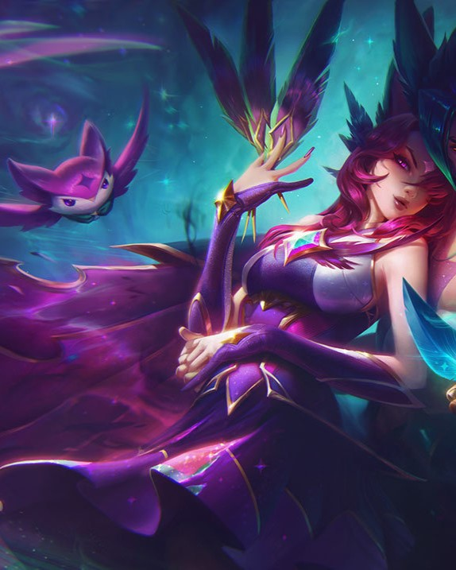
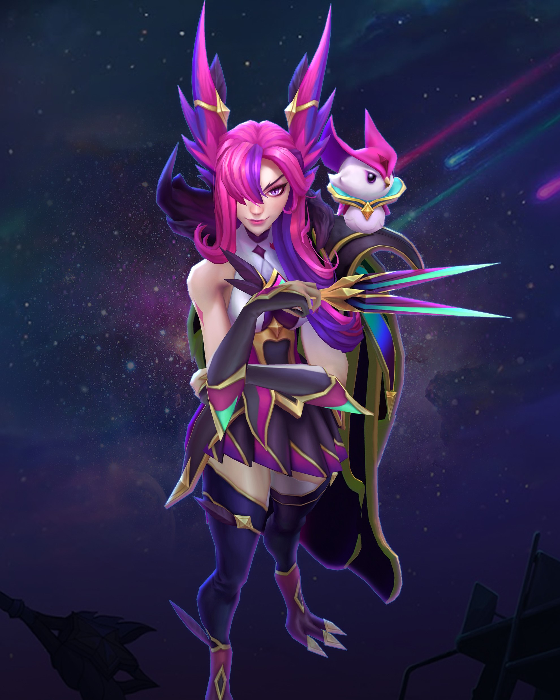
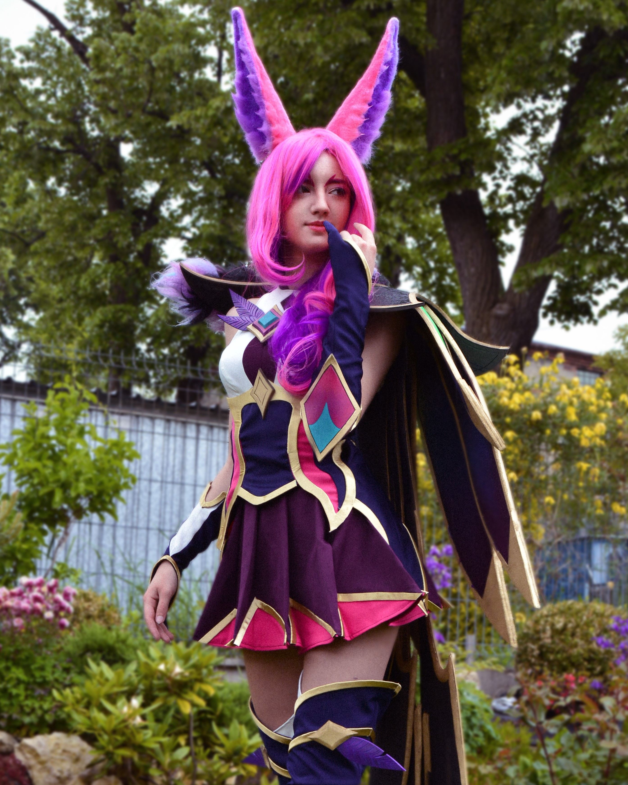
CosplayHiryuu (retrofit)
(Azur Lane) Date: 2021 Materials used: Eva foam, textyles, faux-fur, worbla Techniques used: Sewing, foam carving, airbrush painting, 3d modelingClick for the progress:
(Azur Lane) Date: 2021 Materials used: Eva foam, textyles, faux-fur, worbla Techniques used: Sewing, foam carving, airbrush painting, 3d modelingClick for the progress:
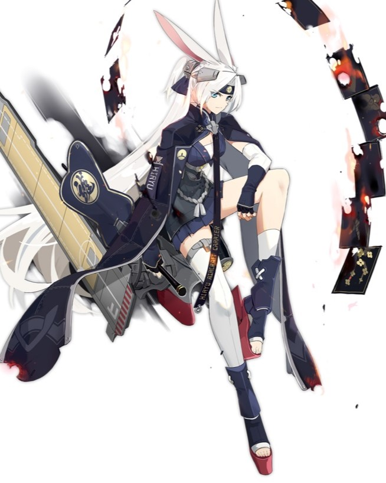
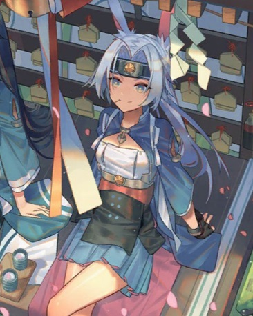
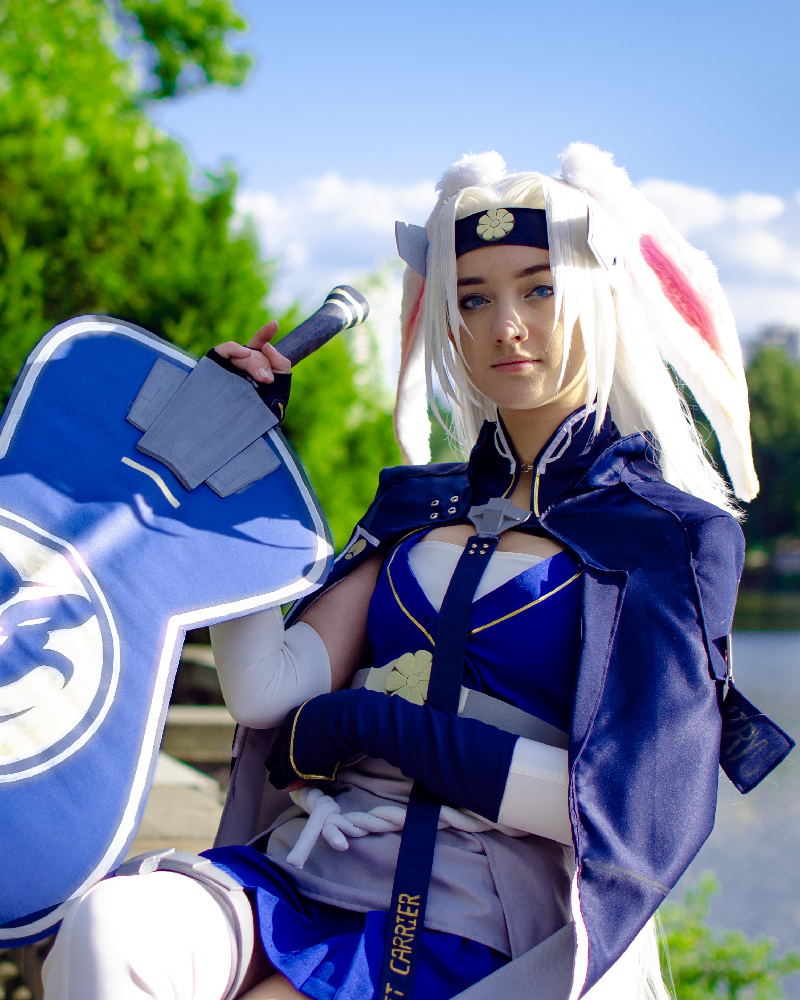
CosplayBlood Moon Sivir
(League of Legends) Date: 2019 Materials used: Eva foam, textyles Techniques used: Sewing, foam carving, airbrush paintingClick for the progress:
(League of Legends) Date: 2019 Materials used: Eva foam, textyles Techniques used: Sewing, foam carving, airbrush paintingClick for the progress:
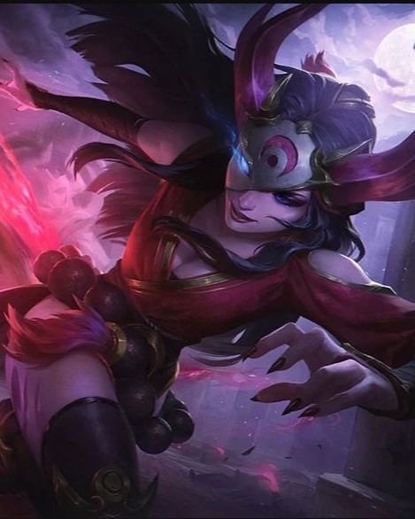
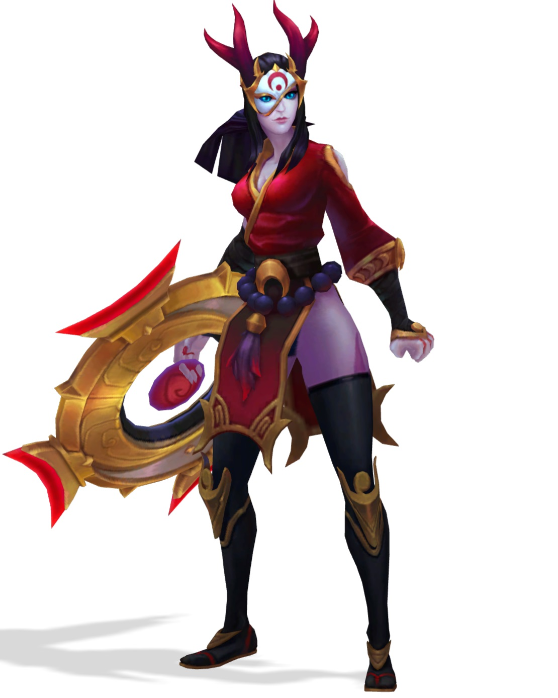
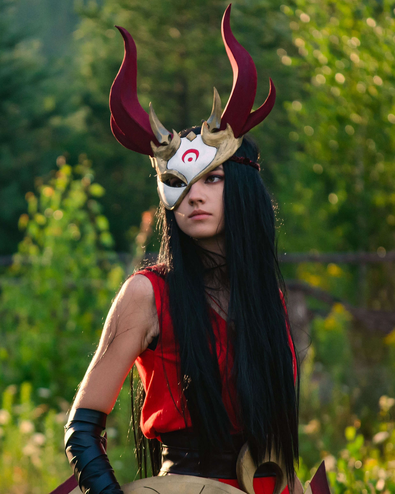
CosplayFFNF Richelieu
(Azur Lane) Date: 2022 Materials used: Eva foam, textyles, PLA Techniques used: Sewing, foam carving, 3d modeling, wig stylingClick for the progress:
(Azur Lane) Date: 2022 Materials used: Eva foam, textyles, PLA Techniques used: Sewing, foam carving, 3d modeling, wig stylingClick for the progress:
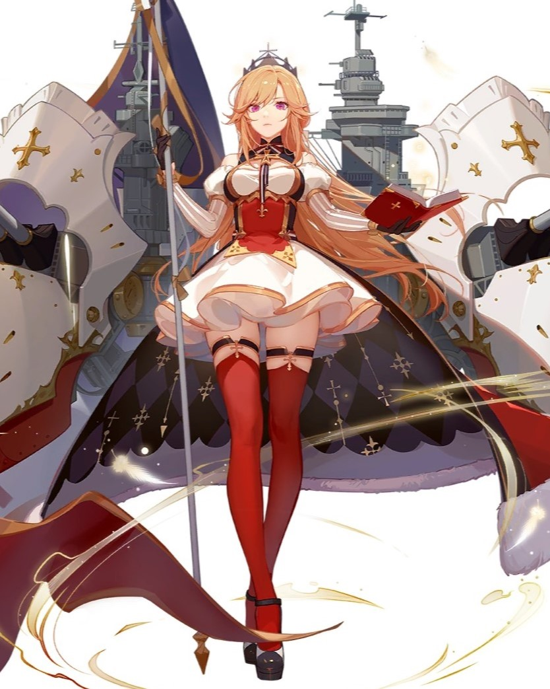
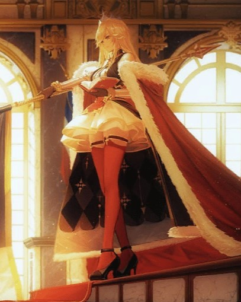
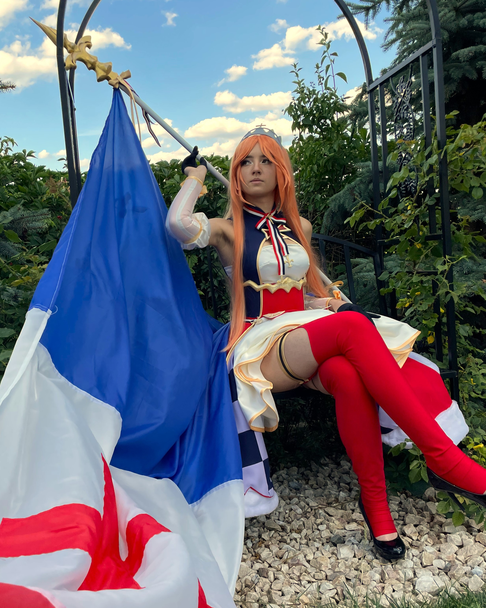
CosplayPestonya Shortcake Wanko
(Overlord) Date: 2025 Materials used: Eva foam, textyles, PLA, faux fur Techniques used: Sewing, foam carving, 3d modeling, wig styling, corset Click for the progress:
(Overlord) Date: 2025 Materials used: Eva foam, textyles, PLA, faux fur Techniques used: Sewing, foam carving, 3d modeling, wig styling, corset Click for the progress:
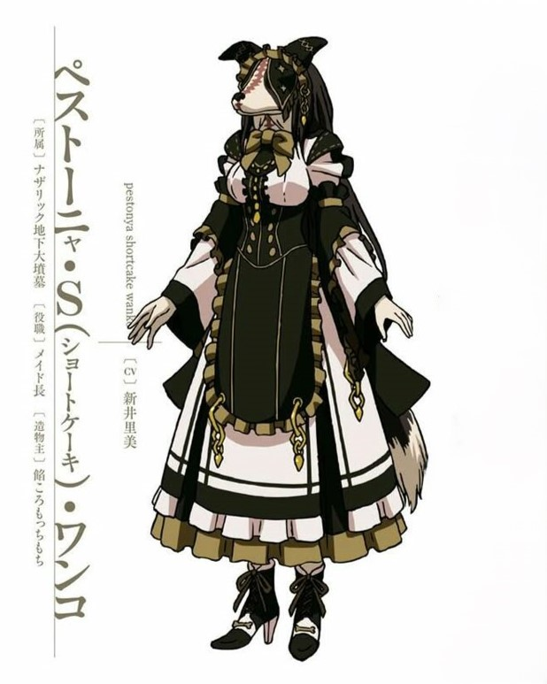